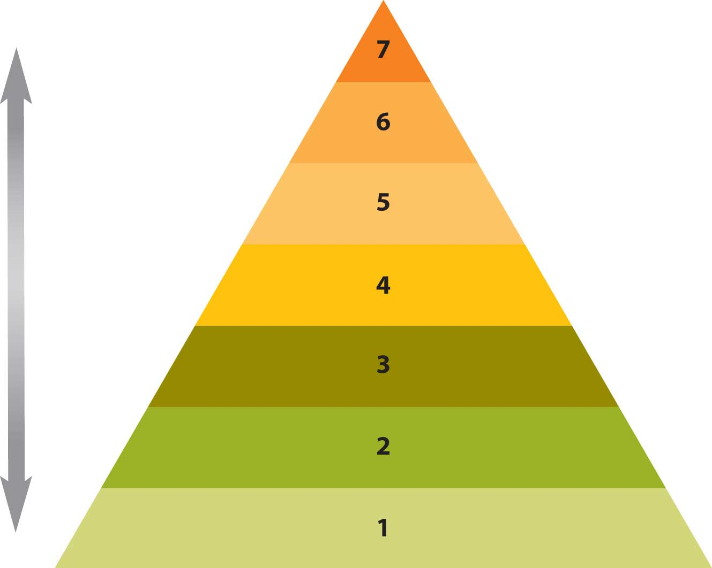

You may have had no problem answering the question, “What are you doing?” and simply pulled a couple of lines from yesterday’s Twitter message or reviewed your BlackBerry calendar. But if you had to compose an entirely original answer, would it prove to be a challenge? Perhaps at first this might appear to be a simple task. You have to work and your job required your participation in a meeting, or you care about someone and met him or her for lunch.
Both scenarios make sense on the surface, but we have to consider the why with more depth. Why that meeting, and why that partner? Why not another job, or a lunch date with someone else? If we consider the question long enough, we’ll come around to the conclusion that we communicate with others in order to meet basic needs, and our meetings, interactions, and relationships help us meet those needs. We may also recognize that not all our needs are met by any one person, job, experience, or context; instead, we diversify our communication interactions in order to meet our needs. At first, you may be skeptical of the idea that we communicate to meet our basic needs, but let’s consider two theories on the subject and see how well they predict, describe, and anticipate our tendency to interact.
Abraham Maslow’s hierarchy of needs, represented in Figure 16.2 "Maslow’s Hierarchy of Needs", may be familiar to you.Maslow, A. (1970). Motivation and personality (2nd ed.). New York, NY: Harper & Row. Perhaps you saw it in negotiation or international business classes and came to recognize its universal applicability. We need the resources listed in level one (i.e., air, food, and water) to survive. If we have met those basic needs, we move to level two: safety. We want to make sure we are safe and that our access to air, food, and water is secure. A job may represent this level of safety at its most basic level. Regardless of how much satisfaction you may receive from a job well done, a paycheck ultimately represents meeting basic needs for many. Still, for others, sacrifice is part of the job. Can you think of any professions that require individuals to make decisions where the safety of others comes first? “First responders” and others who work in public safety often place themselves at risk for the benefit of those they serve.
If we feel safe and secure, we are more likely to seek the companionship of others. Humans tend to form groups naturally, and if basic needs are met, love and belonging occur in level three. Perhaps you’ve been new at work and didn’t understand the first thing about what was really going on. It’s not that you weren’t well trained and did not receive a solid education, but rather that the business or organization is made up of groups and communities that communicate and interact in distinct and divergent ways. You may have known how to do something, but not how it was done at your new place of work. Colleagues may have viewed you as a stranger or “newbie” and may have even declined to help you. Conflict may have been part of your experience, but if you were lucky, a mentor or coworker took the first step and helped you find your way.
As you came to know what was what and who was who, you learned how to negotiate the landscape and avoid landmines. Your self-esteem (level four) improved as you perceived a sense of belonging, but still may have lacked the courage to speak up.
Over time, you may have learned your job tasks and the strategies for succeeding in your organization. Perhaps you even came to be known as a reliable coworker, one who did go the extra mile, one who did assist the “newbies” around the office. If one of them came to you with a problem, you would know how to handle it. You are now looked up to by others and by yourself within the role, with your ability to make a difference. Maslow calls this “self-actualization” (level five), and discusses how people come to perceive a sense of control or empowerment over their context and environment. Where they look back and see that they once felt at the mercy of others, particularly when they were new, they can now influence and direct aspects of the work environment that were once unavailable.
Beyond self-actualization, Maslow recognizes our innate need to know (level six) that drives us to grow and learn, explore our environment, or engage in new experiences. We come to appreciate a sense of self that extends beyond our immediate experiences, beyond the function, and into the community and the representational. We can take in beauty for its own sake, and value aesthetics (level seven) that we previously ignored or had little time to consider.
Figure 16.2 Maslow’s Hierarchy of Needs
Now that you have reached a sense of contentment in your job and can take in a museum tour, the news of a possible corporate merger is suddenly announced in the mainstream media. It may have been just gossip before, but now it is real. You may feel a sense of uncertainty and be concerned about your status as a valued employee. Do you have reason to worry about losing your job? How will you handle the responsibilities that you’ve acquired and what about the company and its obligations to those who have sacrificed over time for common success? Conflict may be more frequent in the workplace, and you may feel compelled to go over your personal budget and reprioritize your spending. You may eliminate museum visits and donations, and you may decide to start saving money as the future is less certain. You may dust off your résumé and start communicating with colleagues in related fields as you network, reaching out to regain that sense of stability, of control, that is lost as you feel your security threatened. You will move through Maslow’s hierarchy as you reevaluate what you need to survive.
This theory of interpersonal needs is individualistic, and many cultures are not centered on the individual, but it does serve to start our discussion about interpersonal needs. What do we need? Why do we communicate? The answers to both questions are often related.
William Schutz offers an alternate version of interpersonal needs. Like Maslow, he considers the universal aspects of our needs, but he outlines how they operate within a range or continuum for each person.Schutz, W. (1966). The interpersonal underworld. Palo Alto, CA: Science and Behavior Books. According to Schutz, the need for affectionRelated to the need for appreciation., or appreciation, is basic to all humans. We all need to be recognized and feel like we belong, but may have differing levels of expectations to meet that need. When part of the merger process is announced and the news of layoffs comes, those coworkers who have never been particularly outgoing and have largely kept to themselves may become even more withdrawn. Schutz describes underpersonalsPeople who seek limited interaction. as people who seek limited interaction. On the opposite end of the spectrum, you may know people where you work that are often seeking attention and affirmation. Schutz describes overpersonalsPeople who have a strong need to be liked and constantly seek attention from others. as people who have a strong need to be liked and constantly seek attention from others. The person who strikes a healthy balance is called a personal individualThe person who strikes a healthy balance in terms of human interaction..
Humans also have a need for controlThe ability to influence people and events., or the ability to influence people and events. But that need may vary by the context, environment, and sense of security. You may have already researched similar mergers, as well as the forecasts for the new organization, and come to realize that your position and your department are central to the current business model. You may have also of taken steps to prioritize your budget, assess your transferable skills, and look for opportunities beyond your current context. Schutz would describe your efforts to control your situation as autocraticSelf-directed in terms of control., or self-directed. At the same time there may be several employees who have not taken similar steps who look to you and others for leadership, in effect abdicating their responsibility. AbdicratsPeople who shift the burn of responsibility from themselves to others. shift the burn of responsibility from themselves to others, looking to others for a sense of control. DemocratsPeople who share the need for control between the individual and the group. share the need between the individual and the group, and may try to hold a departmental meeting to gather information and share.
Finally, Schutz echoes Maslow in his assertion that belonging is a basic interpersonal need, but notes that it exists within a range or continuum, where some need more and others less. UndersocialsPeople who are less likely to seek interaction, may prefer smaller groups, and will generally not be found on center stage. may be less likely to seek interaction, may prefer smaller groups, and will generally not be found on center stage. OversocialsPeople who crave the spotlight of attention and are highly motivated to seek belonging., however, crave the spotlight of attention and are highly motivated to seek belonging. A social personPerson who strikes a healthy balance between being withdrawn and being the constant center of attention. is one who strikes a healthy balance between being withdrawn and being the constant center of attention.
Schutz describes these three interpersonal needs of affection, control, and belonging as interdependent and variable. In one context, an individual may have a high need for control, while in others he or she may not perceive the same level of motivation or compulsion to meet that need. Both Maslow and Schutz offer us two related versions of interpersonal needs that begin to address the central question: why communicate?
We communicate with each other to meet our needs, regardless how we define those needs. From the time you are a newborn infant crying for food or the time you are a toddler learning to say “please” when requesting a cup of milk, to the time you are a adult learning the rituals of the job interview and the conference room, you learn to communicate in order to gain a sense of self within the group or community, meeting your basic needs as you grow and learn.
Through communication, we meet universal human needs.